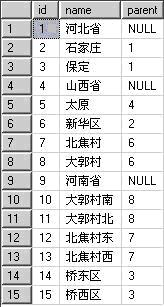
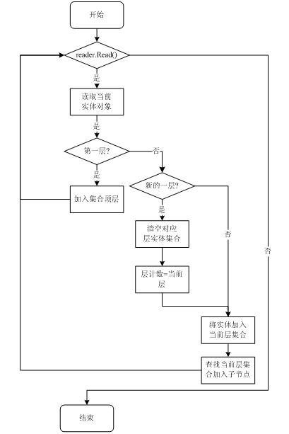
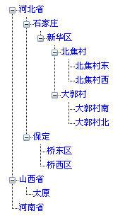

<!DOCTYPE html>


<html lang="zh-CN">


<head>
  <meta charset="utf-8" />
    
  <meta name="description" content="The seeker of the world" />
  
  <meta name="viewport" content="width=device-width, initial-scale=1, maximum-scale=1" />
  <title>
    sqlServer-With语法 |  Tianye Blog
  </title>
  <meta name="generator" content="hexo-theme-ayer">
  
  <link rel="shortcut icon" href="/favicon.ico" />
  
  
<link rel="stylesheet" href="/dist/main.css">

  
<link rel="stylesheet" href="/comm/remixicon.min.css">

  
<link rel="stylesheet" href="/css/custom.css">

  
  
<script src="/comm/pace.min.js"></script>

  
  

  

<link rel="alternate" href="/atom.xml" title="Tianye Blog" type="application/atom+xml">
</head>

</html>

<body>
  <div id="app">
    
      
      <canvas width="1777" height="841"
        style="position: fixed; left: 0px; top: 0px; z-index: 99999; pointer-events: none;"></canvas>
      
    <main class="content on">
      <section class="outer">
  <article
  id="post-sqlServer-With语法"
  class="article article-type-post"
  itemscope
  itemprop="blogPost"
  data-scroll-reveal
>
  <div class="article-inner">
    
    <header class="article-header">
       
<h1 class="article-title sea-center" style="border-left:0" itemprop="name">
  sqlServer-With语法
</h1>
 

    </header>
     
    <div class="article-meta">
      <a href="/2016/04/sqlServer-With%E8%AF%AD%E6%B3%95/" class="article-date">
  <time datetime="2016-04-13T15:15:30.000Z" itemprop="datePublished">2016-04-13</time>
</a> 
  <div class="article-category">
    <a class="article-category-link" href="/categories/sqlServer/">sqlServer</a>
  </div>
  
<div class="word_count">
    <span class="post-time">
        <span class="post-meta-item-icon">
            <i class="ri-quill-pen-line"></i>
            <span class="post-meta-item-text"> 字数统计:</span>
            <span class="post-count">2.7k</span>
        </span>
    </span>

    <span class="post-time">
        &nbsp; | &nbsp;
        <span class="post-meta-item-icon">
            <i class="ri-book-open-line"></i>
            <span class="post-meta-item-text"> 阅读时长≈</span>
            <span class="post-count">11 分钟</span>
        </span>
    </span>
</div>
 
    </div>
      
    <div class="tocbot"></div>


  
    <div class="article-entry" itemprop="articleBody">
       
  <p>今天在论坛上看到一个举例，关于sql server 的示例。 1/25/50/100美分，多少种可能拼凑成2美元。 看了其中第一条语法，放在SQL SERVER中测试，发现真的列举出所有组合成2美元的方式。 于是仔细研究语法，发现用了With关键字。 </p>
<h2 id="引言"><a href="#引言" class="headerlink" title="引言"></a>引言</h2><p>====</p>
<p>现实项目中经常遇到需要处理递归父子关系的问题，如果把层次关系分开，放在多个表里通过主外键关系联接，最明显的问题就是扩展起来不方便，对于这种情况，一般我们会创建一个使用自连接的表来存放数据。例如存放会员地区数据表结构可能是这样：</p>
<p>列名</p>
<p>描述</p>
<p>location_id</p>
<p>地区编号</p>
<p>location_name</p>
<p>地区名称</p>
<p>parentlocation_id</p>
<p>上级地区编号</p>
<p>或者某个部分的职员表结构可能如下所示：</p>
<p>列名</p>
<p>描述</p>
<p>employee_id</p>
<p>职员编号</p>
<p>employee_name</p>
<p>职员名称</p>
<p>manager_id</p>
<p>职员的直接上级管理者,和employee_id进行自联接</p>
<p>通过类似表结构，我们就可以通过一个表理论上管理无限级数的父/子关系，但是当我们需要将这些数据读取出来，不论是填充到一个树中，或是使用级联显示出来，需要花费一定的精力。传统的做法，是做一个递归调用，首先连接数据库将顶层数据（也就是parent_xxx为null的记录）读取出来，再对每一条数据进行递归访问填充集合，这种做法需要连接数据库多次，显然不是较好的解决方法，那么我们能不能通过一次数据库访问，将数据全部读取出来，并且为了按照父子关系形成集合，使返回的数据满足某种格式。</p>
<h2 id="分析"><a href="#分析" class="headerlink" title="分析"></a>分析</h2><p>  理想情况下，如果父/子关系数据时严格按照关系结构添加到数据库中，亦即首先添加某条父记录，接着添加该父记录的子记录，如果子记录还包含子记录的话继续添加，最终数据表中父/子关系按规则排列数据，我们就可以使用某种算法填充集合，但是正如我们所说，这是理想情况，实际情况下数据经常会发生改变，导致数据没有规律可言，如下图所示，这样的话读取数据填充集合就不太容易的。 </p>
<p></p>
<p>所以我们要做的就是通过查询使数据库返回的数据满足这种格式，那么我们的思路是首先查找顶层（0层）记录，再查询第1层记录，接下来是第2层、第3层直到第n层。因为层数是不确定的，所以仍然需要使用递归访问。 SQL Server 2005中提供了新的with关键字，用于指定临时命名的结果集，这些结果集称为公用表表达式（CTE）。该表达式源自简单查询，并且在SELECT、INSERT、UPDATE或DELETE 语句的执行范围内定义。该子句也可用在 CREATE VIEW 语句中，作为该语句的 SELECT 定义语句的一部分。公用表表达式可以包括对自身的引用。这种表达式称为递归公用表表达式。 其语法为：</p>
<figure class="highlight plain"><table><tr><td class="gutter"><pre><span class="line">1</span><br><span class="line">2</span><br><span class="line">3</span><br><span class="line">4</span><br><span class="line">5</span><br></pre></td><td class="code"><pre><span class="line"> \[ WITH &lt;common\_table\_expression&gt; \[ ,...n \] \]</span><br><span class="line">&lt;common\_table\_expression&gt;::&#x3D;</span><br><span class="line">expression\_name\[ ( column\_name \[ ,...n \] ) \]</span><br><span class="line">AS</span><br><span class="line">( CTE\_query\_definition )</span><br></pre></td></tr></table></figure>
<p>使用with关键子的一个简单示例，以下代码将tb_loc表中数据源样输出：</p>
<figure class="highlight plain"><table><tr><td class="gutter"><pre><span class="line">1</span><br><span class="line">2</span><br><span class="line">3</span><br><span class="line">4</span><br><span class="line">5</span><br><span class="line">6</span><br></pre></td><td class="code"><pre><span class="line">WITH locs(id,name,parent)</span><br><span class="line">AS</span><br><span class="line">(</span><br><span class="line">    SELECT * FROM tb_loc</span><br><span class="line">)</span><br><span class="line">SELECT * FROM locs</span><br></pre></td></tr></table></figure>
<p>为了创建良好层次记录结构集，使用with关键字首先读取顶层记录，并且针对每一条顶层记录读取其子记录，直到读取到最底层级记录，最后将所有的记录组合起来，这里用到了UNION ALL关键字，用于将多个查询结果组合到一个结果集中。 接下来就可以使用该关键字创建存储过程返回结果集，并附加每条记录所位于的“层”数，如下图所示： </p>
<p></p>
<p>最后需要在前台界面将其显示出来，由于记录已经按层次返回，需要做的就是按层次首其输出，首先将第0层数据输出，接下来将遍历第0层数据，将第一层数据添加到合适的父对象中，重复此过程直到填充结果。那么这里的难题就在于如何查找父对象，我们当然可以遍历集合，但是这么做的话如果数据量很大将导致效率低下。既然可以得到当前对象所位于的层的信息，就也是这树倒置的树是一层一层向下填充的，我们可以定义一个临时集合变量，存储当前层上一层的所有父对象，在插入当前层对象时遍历集合变量以插入到合适的位置，同时我们还必须保证在逐层读取数据时临时集合变量中持有的始终时当前层上一层所有的对象;</p>
<h2 id="实现"><a href="#实现" class="headerlink" title="实现"></a>实现</h2><p>======</p>
<p>3.1 打开SQL Server 2005 Management Studio，选择某个数据库输入以下语句创建表结构：</p>
<figure class="highlight sql"><table><tr><td class="gutter"><pre><span class="line">1</span><br><span class="line">2</span><br><span class="line">3</span><br><span class="line">4</span><br><span class="line">5</span><br><span class="line">6</span><br><span class="line">7</span><br></pre></td><td class="code"><pre><span class="line"><span class="keyword">CREATE</span> <span class="keyword">TABLE</span> [tb_loc](</span><br><span class="line">    [<span class="keyword">id</span>] [<span class="built_in">int</span>],</span><br><span class="line">    [<span class="keyword">name</span>] [<span class="built_in">varchar</span>](<span class="number">16</span>),</span><br><span class="line">    [<span class="keyword">parent</span>] [<span class="built_in">int</span>]</span><br><span class="line">)</span><br><span class="line"></span><br><span class="line"><span class="keyword">GO</span></span><br></pre></td></tr></table></figure>
<p>3.2 创建测试数据：</p>
<figure class="highlight sql"><table><tr><td class="gutter"><pre><span class="line">1</span><br><span class="line">2</span><br><span class="line">3</span><br><span class="line">4</span><br><span class="line">5</span><br><span class="line">6</span><br><span class="line">7</span><br><span class="line">8</span><br><span class="line">9</span><br><span class="line">10</span><br><span class="line">11</span><br><span class="line">12</span><br><span class="line">13</span><br><span class="line">14</span><br><span class="line">15</span><br><span class="line">16</span><br><span class="line">17</span><br></pre></td><td class="code"><pre><span class="line"><span class="keyword">INSERT</span> tb_loc(<span class="keyword">id</span>,<span class="keyword">name</span>,<span class="keyword">parent</span>) <span class="keyword">VALUES</span>( <span class="number">1</span>,<span class="string">'河北省'</span>,<span class="literal">NULL</span>) </span><br><span class="line"><span class="keyword">INSERT</span> tb_loc(<span class="keyword">id</span>,<span class="keyword">name</span>,<span class="keyword">parent</span>) <span class="keyword">VALUES</span>( <span class="number">2</span>,<span class="string">'石家庄'</span>,<span class="number">1</span>) </span><br><span class="line"><span class="keyword">INSERT</span> tb_loc(<span class="keyword">id</span>,<span class="keyword">name</span>,<span class="keyword">parent</span>) <span class="keyword">VALUES</span>( <span class="number">3</span>,<span class="string">'保定'</span>,<span class="number">1</span>) </span><br><span class="line"><span class="keyword">INSERT</span> tb_loc(<span class="keyword">id</span>,<span class="keyword">name</span>,<span class="keyword">parent</span>) <span class="keyword">VALUES</span>( <span class="number">4</span>,<span class="string">'山西省'</span>,<span class="literal">NULL</span>) </span><br><span class="line"><span class="keyword">INSERT</span> tb_loc(<span class="keyword">id</span>,<span class="keyword">name</span>,<span class="keyword">parent</span>) <span class="keyword">VALUES</span>( <span class="number">5</span>,<span class="string">'太原'</span>,<span class="number">4</span>) </span><br><span class="line"><span class="keyword">INSERT</span> tb_loc(<span class="keyword">id</span>,<span class="keyword">name</span>,<span class="keyword">parent</span>) <span class="keyword">VALUES</span>( <span class="number">6</span>,<span class="string">'新华区'</span>,<span class="number">2</span>) </span><br><span class="line"><span class="keyword">INSERT</span> tb_loc(<span class="keyword">id</span>,<span class="keyword">name</span>,<span class="keyword">parent</span>) <span class="keyword">VALUES</span>( <span class="number">7</span>,<span class="string">'北焦村'</span>,<span class="number">6</span>) </span><br><span class="line"><span class="keyword">INSERT</span> tb_loc(<span class="keyword">id</span>,<span class="keyword">name</span>,<span class="keyword">parent</span>) <span class="keyword">VALUES</span>( <span class="number">8</span>,<span class="string">'大郭村'</span>,<span class="number">6</span>) </span><br><span class="line"><span class="keyword">INSERT</span> tb_loc(<span class="keyword">id</span>,<span class="keyword">name</span>,<span class="keyword">parent</span>) <span class="keyword">VALUES</span>( <span class="number">9</span>,<span class="string">'河南省'</span>,<span class="literal">NULL</span>) </span><br><span class="line"><span class="keyword">INSERT</span> tb_loc(<span class="keyword">id</span>,<span class="keyword">name</span>,<span class="keyword">parent</span>) <span class="keyword">VALUES</span>( <span class="number">10</span>,<span class="string">'大郭村南'</span>,<span class="number">8</span>) </span><br><span class="line"><span class="keyword">INSERT</span> tb_loc(<span class="keyword">id</span>,<span class="keyword">name</span>,<span class="keyword">parent</span>) <span class="keyword">VALUES</span>( <span class="number">11</span>,<span class="string">'大郭村北'</span>,<span class="number">8</span>) </span><br><span class="line"><span class="keyword">INSERT</span> tb_loc(<span class="keyword">id</span>,<span class="keyword">name</span>,<span class="keyword">parent</span>) <span class="keyword">VALUES</span>( <span class="number">12</span>,<span class="string">'北焦村东'</span>,<span class="number">7</span>) </span><br><span class="line"><span class="keyword">INSERT</span> tb_loc(<span class="keyword">id</span>,<span class="keyword">name</span>,<span class="keyword">parent</span>) <span class="keyword">VALUES</span>( <span class="number">13</span>,<span class="string">'北焦村西'</span>,<span class="number">7</span>) </span><br><span class="line"><span class="keyword">INSERT</span> tb_loc(<span class="keyword">id</span>,<span class="keyword">name</span>,<span class="keyword">parent</span>) <span class="keyword">VALUES</span>( <span class="number">14</span>,<span class="string">'桥东区'</span>,<span class="number">3</span>) </span><br><span class="line"><span class="keyword">INSERT</span> tb_loc(<span class="keyword">id</span>,<span class="keyword">name</span>,<span class="keyword">parent</span>) <span class="keyword">VALUES</span>( <span class="number">15</span>,<span class="string">'桥西区'</span>,<span class="number">3</span>) </span><br><span class="line"></span><br><span class="line"><span class="keyword">GO</span></span><br></pre></td></tr></table></figure>
<p>3.3 创建pr_GetLocations存储过程：</p>
<figure class="highlight sql"><table><tr><td class="gutter"><pre><span class="line">1</span><br><span class="line">2</span><br><span class="line">3</span><br><span class="line">4</span><br><span class="line">5</span><br><span class="line">6</span><br><span class="line">7</span><br><span class="line">8</span><br><span class="line">9</span><br><span class="line">10</span><br><span class="line">11</span><br><span class="line">12</span><br><span class="line">13</span><br><span class="line">14</span><br><span class="line">15</span><br></pre></td><td class="code"><pre><span class="line"><span class="keyword">CREATE</span> <span class="keyword">PROCEDURE</span> pr_GetLocations</span><br><span class="line"><span class="keyword">AS</span></span><br><span class="line"><span class="keyword">BEGIN</span></span><br><span class="line">    <span class="keyword">WITH</span> locs(<span class="keyword">id</span>,<span class="keyword">name</span>,<span class="keyword">parent</span>,loclevel)</span><br><span class="line">    <span class="keyword">AS</span></span><br><span class="line">    (</span><br><span class="line">        <span class="keyword">SELECT</span> <span class="keyword">id</span>,<span class="keyword">name</span>,<span class="keyword">parent</span>,<span class="number">0</span> <span class="keyword">AS</span> loclevel <span class="keyword">FROM</span> tb_loc</span><br><span class="line">        <span class="keyword">WHERE</span> <span class="keyword">parent</span> <span class="keyword">IS</span> <span class="literal">NULL</span></span><br><span class="line">        <span class="keyword">UNION</span> <span class="keyword">ALL</span></span><br><span class="line">        <span class="keyword">SELECT</span> l.id,l.name,l.parent,loclevel+<span class="number">1</span> <span class="keyword">FROM</span> tb_loc l </span><br><span class="line">            <span class="keyword">INNER</span> <span class="keyword">JOIN</span> locs p <span class="keyword">ON</span> l.parent=p.id</span><br><span class="line">    )</span><br><span class="line"></span><br><span class="line">    <span class="keyword">SELECT</span> * <span class="keyword">FROM</span> locs</span><br><span class="line"><span class="keyword">END</span></span><br></pre></td></tr></table></figure>
<p>3.4 在Visual Studio 2008里创建解决方案并新建一个网站。 3.5 在网站中添加APP_Code目录，并创建Location实体类，该类标识了所在地编号和名称，并且保存了父级所在地编号和它所包含的所有子所在地的集合：</p>
<figure class="highlight java"><table><tr><td class="gutter"><pre><span class="line">1</span><br><span class="line">2</span><br><span class="line">3</span><br><span class="line">4</span><br><span class="line">5</span><br><span class="line">6</span><br><span class="line">7</span><br><span class="line">8</span><br><span class="line">9</span><br><span class="line">10</span><br><span class="line">11</span><br><span class="line">12</span><br><span class="line">13</span><br><span class="line">14</span><br><span class="line">15</span><br><span class="line">16</span><br><span class="line">17</span><br><span class="line">18</span><br><span class="line">19</span><br><span class="line">20</span><br><span class="line">21</span><br><span class="line">22</span><br><span class="line">23</span><br><span class="line">24</span><br><span class="line">25</span><br><span class="line">26</span><br><span class="line">27</span><br><span class="line">28</span><br><span class="line">29</span><br><span class="line">30</span><br><span class="line">31</span><br><span class="line">32</span><br><span class="line">33</span><br><span class="line">34</span><br><span class="line">35</span><br></pre></td><td class="code"><pre><span class="line"><span class="keyword">public</span> <span class="class"><span class="keyword">class</span> <span class="title">Location</span></span></span><br><span class="line"><span class="class"></span>&#123;</span><br><span class="line">    <span class="keyword">public</span> <span class="keyword">int</span> Id</span><br><span class="line">    &#123;</span><br><span class="line">        get;</span><br><span class="line">        set;</span><br><span class="line">    &#125;</span><br><span class="line"></span><br><span class="line">    <span class="keyword">public</span> string Name</span><br><span class="line">    &#123;</span><br><span class="line">        get;</span><br><span class="line">        set;</span><br><span class="line">    &#125;</span><br><span class="line"></span><br><span class="line">    <span class="keyword">public</span> LocationCollection SubLocations</span><br><span class="line">    &#123;</span><br><span class="line">        get;</span><br><span class="line">        set;</span><br><span class="line">    &#125;</span><br><span class="line"></span><br><span class="line">    <span class="keyword">public</span> <span class="keyword">int</span> ParentId</span><br><span class="line">    &#123;</span><br><span class="line">        get;</span><br><span class="line">        set;</span><br><span class="line">    &#125;</span><br><span class="line"></span><br><span class="line">    <span class="function"><span class="keyword">public</span> <span class="title">Location</span><span class="params">()</span></span></span><br><span class="line"><span class="function">    </span>&#123;</span><br><span class="line">        Id = <span class="number">0</span>;</span><br><span class="line">        Name = string.Empty;</span><br><span class="line">        SubLocations = <span class="keyword">new</span> LocationCollection();</span><br><span class="line"></span><br><span class="line">        ParentId=<span class="number">0</span>;</span><br><span class="line">    &#125;</span><br><span class="line">&#125;</span><br></pre></td></tr></table></figure>
<p>3.5 以上代码使用了LocationCollection集合类，使用泛型集合创建该类（同样位于APP_Code目录下）：</p>
<figure class="highlight java"><table><tr><td class="gutter"><pre><span class="line">1</span><br><span class="line">2</span><br><span class="line">3</span><br><span class="line">4</span><br><span class="line">5</span><br><span class="line">6</span><br></pre></td><td class="code"><pre><span class="line">using System.Collections.Generic;</span><br><span class="line"></span><br><span class="line">public class LocationCollection:List&lt;Location&gt;</span><br><span class="line">&#123;</span><br><span class="line">    </span><br><span class="line">&#125;</span><br></pre></td></tr></table></figure>
<p>3.6 在APP_Code目录下创建DAO类用于访问数据库，添加必要的命名空间引用：</p>
<figure class="highlight java"><table><tr><td class="gutter"><pre><span class="line">1</span><br><span class="line">2</span><br><span class="line">3</span><br><span class="line">4</span><br><span class="line">5</span><br><span class="line">6</span><br><span class="line">7</span><br></pre></td><td class="code"><pre><span class="line">using System;</span><br><span class="line">using System.Data;</span><br><span class="line">using System.Data.SqlClient;</span><br><span class="line"></span><br><span class="line"><span class="keyword">public</span> <span class="class"><span class="keyword">class</span> <span class="title">DAO</span></span></span><br><span class="line"><span class="class"></span>&#123;</span><br><span class="line">&#125;</span><br></pre></td></tr></table></figure>
<p>3.7编写GetLocations方法，返回所在地集合对象（请根据实际情况修改数据库连接字符串）：</p>
<figure class="highlight java"><table><tr><td class="gutter"><pre><span class="line">1</span><br><span class="line">2</span><br><span class="line">3</span><br><span class="line">4</span><br><span class="line">5</span><br><span class="line">6</span><br><span class="line">7</span><br><span class="line">8</span><br><span class="line">9</span><br><span class="line">10</span><br><span class="line">11</span><br><span class="line">12</span><br><span class="line">13</span><br><span class="line">14</span><br><span class="line">15</span><br><span class="line">16</span><br><span class="line">17</span><br><span class="line">18</span><br><span class="line">19</span><br><span class="line">20</span><br><span class="line">21</span><br><span class="line">22</span><br><span class="line">23</span><br><span class="line">24</span><br><span class="line">25</span><br><span class="line">26</span><br><span class="line">27</span><br><span class="line">28</span><br><span class="line">29</span><br><span class="line">30</span><br><span class="line">31</span><br><span class="line">32</span><br><span class="line">33</span><br><span class="line">34</span><br><span class="line">35</span><br><span class="line">36</span><br><span class="line">37</span><br><span class="line">38</span><br><span class="line">39</span><br><span class="line">40</span><br><span class="line">41</span><br><span class="line">42</span><br><span class="line">43</span><br><span class="line">44</span><br><span class="line">45</span><br><span class="line">46</span><br><span class="line">47</span><br><span class="line">48</span><br><span class="line">49</span><br><span class="line">50</span><br><span class="line">51</span><br><span class="line">52</span><br><span class="line">53</span><br></pre></td><td class="code"><pre><span class="line"><span class="function"><span class="keyword">public</span> LocationCollection <span class="title">GetLocations</span><span class="params">()</span></span></span><br><span class="line"><span class="function"></span>&#123;</span><br><span class="line">    LocationCollection locs = <span class="keyword">new</span> LocationCollection();</span><br><span class="line"></span><br><span class="line">    using (SqlConnection conn = <span class="keyword">new</span></span><br><span class="line">        SqlConnection(<span class="string">"server=.;uid=sa;pwd=00000000;database=temp;"</span>))</span><br><span class="line">    &#123;</span><br><span class="line">        conn.Open();</span><br><span class="line"></span><br><span class="line">        SqlCommand cmd = <span class="keyword">new</span> SqlCommand();</span><br><span class="line">        cmd.CommandText = <span class="string">"pr_GetLocations"</span>;</span><br><span class="line">        cmd.CommandType = CommandType.StoredProcedure;</span><br><span class="line">        cmd.Connection = conn;</span><br><span class="line"></span><br><span class="line">        SqlDataReader reader = cmd.ExecuteReader();</span><br><span class="line">                    </span><br><span class="line">        <span class="keyword">int</span> level = <span class="number">0</span>;</span><br><span class="line">        <span class="keyword">int</span> oldlevel = <span class="number">1</span>;</span><br><span class="line"></span><br><span class="line">        LocationCollection container=<span class="keyword">new</span> LocationCollection();</span><br><span class="line">        LocationCollection current = <span class="keyword">new</span> LocationCollection();</span><br><span class="line"></span><br><span class="line">        <span class="keyword">while</span> (reader.Read())</span><br><span class="line">        &#123;</span><br><span class="line">            Location loc = GetLocationFromReader(reader, out level);</span><br><span class="line"></span><br><span class="line">            <span class="keyword">if</span> (level == <span class="number">0</span>)</span><br><span class="line">            &#123;</span><br><span class="line">                locs.Add(loc);</span><br><span class="line">                container.Add(loc);                    </span><br><span class="line">            &#125;</span><br><span class="line">            <span class="keyword">else</span></span><br><span class="line">            &#123;</span><br><span class="line">                <span class="keyword">if</span> (oldlevel != level)</span><br><span class="line">                &#123;</span><br><span class="line">                    container.Clear();</span><br><span class="line"></span><br><span class="line">                    foreach (Location l in current)</span><br><span class="line">                        container.Add(l);</span><br><span class="line"></span><br><span class="line">                    current.Clear();</span><br><span class="line">                    oldlevel = level;</span><br><span class="line">                &#125;</span><br><span class="line"></span><br><span class="line">                current.Add(loc);</span><br><span class="line"></span><br><span class="line">                CreateLocation(container, loc);</span><br><span class="line">            &#125;                </span><br><span class="line">        &#125;</span><br><span class="line">    &#125;</span><br><span class="line"></span><br><span class="line">    <span class="keyword">return</span> locs;</span><br><span class="line">&#125;</span><br></pre></td></tr></table></figure>
<p>在该方法按照以下步骤执行： <em>1. 使用命令对象对象执行pr_GetLocations存储过程返回结果集</em> <em>2. 如果数据阅读器读取了数据（reader.Read方法返回true）执行：</em> 2.1.从数据阅读器当前记录中读取Location对象，并返回层数信息（out level） 2.2.如果是第一层（level等于0）填充locs集合，并加入到container对象 2.3.如果不是第一层根据层标志（oldlevel）判断当前层是否是新的一层 2.4 如果当前层是新的一层清空container集合并将current集合中实体复制到container集合中，清空current集合并置层标志（oldlevel） 2.5 将当前对象添加到current集合中 2.6 调用CreateLocation方法从container上层集合中匹配当前实体父级对象并加入父对象的子集合中 <em>3. 重复第2步直到读取完全部数据</em> 可以看到container集合始终保存了当前层的上层所有的实体对象，并且为了在更换层数后能够正确的更新container集合，使用current集合保存当前层的实体对象。 3.8 编写GetLocationFromReader方法，用于从数据阅读器中返回Location实体对象，并将层数信息使用out参数返回：</p>
<figure class="highlight java"><table><tr><td class="gutter"><pre><span class="line">1</span><br><span class="line">2</span><br><span class="line">3</span><br><span class="line">4</span><br><span class="line">5</span><br><span class="line">6</span><br><span class="line">7</span><br><span class="line">8</span><br><span class="line">9</span><br><span class="line">10</span><br><span class="line">11</span><br><span class="line">12</span><br><span class="line">13</span><br><span class="line">14</span><br></pre></td><td class="code"><pre><span class="line"><span class="function"><span class="keyword">private</span> Location <span class="title">GetLocationFromReader</span><span class="params">(SqlDataReader reader, out <span class="keyword">int</span> level)</span></span></span><br><span class="line"><span class="function"></span>&#123;</span><br><span class="line">    Location loc = <span class="keyword">new</span> Location();</span><br><span class="line">    loc.Id = Convert.ToInt32(reader\[<span class="string">"id"</span>\]);</span><br><span class="line">    loc.Name = Convert.ToString(reader\[<span class="string">"name"</span>\]);</span><br><span class="line"></span><br><span class="line">    object o = reader\[<span class="string">"parent"</span>\];</span><br><span class="line">    <span class="keyword">if</span> (o != DBNull.Value)</span><br><span class="line">        loc.ParentId = Convert.ToInt32(o);</span><br><span class="line"></span><br><span class="line">    level = Convert.ToInt32(reader\[<span class="string">"loclevel"</span>\]);</span><br><span class="line"></span><br><span class="line">    <span class="keyword">return</span> loc;</span><br><span class="line">&#125;</span><br></pre></td></tr></table></figure>
<p>3.9 编写CreateLocation方法，该方法遍历实体集合找到与当前实体对象的父级编号匹配的实体，并将当前实体加入到父级实体的子集合中：</p>
<figure class="highlight java"><table><tr><td class="gutter"><pre><span class="line">1</span><br><span class="line">2</span><br><span class="line">3</span><br><span class="line">4</span><br><span class="line">5</span><br><span class="line">6</span><br><span class="line">7</span><br><span class="line">8</span><br><span class="line">9</span><br><span class="line">10</span><br><span class="line">11</span><br></pre></td><td class="code"><pre><span class="line"><span class="function"><span class="keyword">private</span> <span class="keyword">void</span> <span class="title">CreateLocation</span><span class="params">(LocationCollection container, Location loc)</span></span></span><br><span class="line"><span class="function"></span>&#123;</span><br><span class="line">    foreach (Location location in container)</span><br><span class="line">    &#123;</span><br><span class="line">        <span class="keyword">if</span> (location.Id == loc.ParentId)</span><br><span class="line">        &#123;</span><br><span class="line">            location.SubLocations.Add(loc);</span><br><span class="line">            <span class="keyword">break</span>;</span><br><span class="line">        &#125;</span><br><span class="line">    &#125;</span><br><span class="line">&#125;</span><br></pre></td></tr></table></figure>
<p>3.10 向Default.aspx页面上添加TreeView控件：</p>
<p>&lt;asp:TreeView ID=”trvLocation” runat=”server” Font-Size=”12px”<br>    ShowLines=”True”&gt;<br></asp:TreeView></p>
<p>3.11 在Default.aspx页面后置代码中编写BindData数据绑定方法：</p>
<figure class="highlight java"><table><tr><td class="gutter"><pre><span class="line">1</span><br><span class="line">2</span><br><span class="line">3</span><br><span class="line">4</span><br><span class="line">5</span><br><span class="line">6</span><br><span class="line">7</span><br><span class="line">8</span><br><span class="line">9</span><br><span class="line">10</span><br><span class="line">11</span><br><span class="line">12</span><br><span class="line">13</span><br></pre></td><td class="code"><pre><span class="line"><span class="function"><span class="keyword">private</span> <span class="keyword">void</span> <span class="title">BindData</span><span class="params">()</span></span></span><br><span class="line"><span class="function"></span>&#123;</span><br><span class="line">    DAO dao = <span class="keyword">new</span> DAO();</span><br><span class="line"></span><br><span class="line">    LocationCollection locs = dao.GetLocations();</span><br><span class="line"></span><br><span class="line">    TreeNodeCollection nodes = CreateTreeNodes(locs);</span><br><span class="line"></span><br><span class="line">    foreach (TreeNode node in nodes)</span><br><span class="line">    &#123;</span><br><span class="line">        trvLocation.Nodes.Add(node);</span><br><span class="line">    &#125;</span><br><span class="line">&#125;</span><br></pre></td></tr></table></figure>
<p>3.12 BindData方法调用了CreateTreeNode方法返回节点集合，该方法中递归调用自身以得到全部所在地节点：</p>
<figure class="highlight java"><table><tr><td class="gutter"><pre><span class="line">1</span><br><span class="line">2</span><br><span class="line">3</span><br><span class="line">4</span><br><span class="line">5</span><br><span class="line">6</span><br><span class="line">7</span><br><span class="line">8</span><br><span class="line">9</span><br><span class="line">10</span><br><span class="line">11</span><br><span class="line">12</span><br><span class="line">13</span><br><span class="line">14</span><br><span class="line">15</span><br><span class="line">16</span><br><span class="line">17</span><br><span class="line">18</span><br><span class="line">19</span><br><span class="line">20</span><br><span class="line">21</span><br></pre></td><td class="code"><pre><span class="line"><span class="function"><span class="keyword">private</span> TreeNodeCollection <span class="title">CreateTreeNodes</span><span class="params">(LocationCollection locs)</span></span></span><br><span class="line"><span class="function"></span>&#123;</span><br><span class="line">    TreeNodeCollection nodeColl = <span class="keyword">new</span> TreeNodeCollection();</span><br><span class="line"></span><br><span class="line">    foreach (Location loc in locs)</span><br><span class="line">    &#123;</span><br><span class="line">        TreeNode node = <span class="keyword">new</span> TreeNode(loc.Name, loc.Id.ToString());</span><br><span class="line">        </span><br><span class="line">        <span class="keyword">if</span> (loc.SubLocations.Count &gt; <span class="number">0</span>)</span><br><span class="line">        &#123;</span><br><span class="line">            TreeNodeCollection subColl = CreateTreeNodes(loc.SubLocations);</span><br><span class="line"></span><br><span class="line">            foreach (TreeNode subNode in subColl)</span><br><span class="line">                node.ChildNodes.Add(subNode);</span><br><span class="line">        &#125;</span><br><span class="line"></span><br><span class="line">        nodeColl.Add(node);</span><br><span class="line">    &#125;</span><br><span class="line"></span><br><span class="line">    <span class="keyword">return</span> nodeColl;</span><br><span class="line">&#125;</span><br></pre></td></tr></table></figure>
<p>3.13 最后在页面加载事件里执行数据绑定：</p>
<figure class="highlight java"><table><tr><td class="gutter"><pre><span class="line">1</span><br><span class="line">2</span><br><span class="line">3</span><br><span class="line">4</span><br><span class="line">5</span><br><span class="line">6</span><br><span class="line">7</span><br></pre></td><td class="code"><pre><span class="line"><span class="function"><span class="keyword">protected</span> <span class="keyword">void</span> <span class="title">Page_Load</span><span class="params">(object sender, EventArgs e)</span></span></span><br><span class="line"><span class="function"></span>&#123;</span><br><span class="line">    <span class="keyword">if</span> (!IsPostBack)</span><br><span class="line">    &#123;</span><br><span class="line">        <span class="keyword">this</span>.BindData();</span><br><span class="line">    &#125;</span><br><span class="line">&#125;</span><br></pre></td></tr></table></figure>
<p>3.14 在浏览器中预览结果： </p>
<p></p>
<h2 id="总结"><a href="#总结" class="headerlink" title="总结"></a>总结</h2><p>原来在处理类似父子关系时总是找不到好的解决办法，现在通过SQL Server 2005里的新特性可以较为合理的解决该类问题，在这里主要用到了with关键字实现递归访问，并且在输出数据时同样使用了递归的方法。</p>
 
      <!-- reward -->
      
    </div>
    

    <!-- copyright -->
    
    <div class="declare">
      <ul class="post-copyright">
        <li>
          <i class="ri-copyright-line"></i>
          <strong>版权声明： </strong>
          本博客所有文章，未经许可，任何单位及个人不得做营利性使用！如有侵权请联系作者。
        </li>
      </ul>
    </div>
    
    <footer class="article-footer">
       
  <ul class="article-tag-list" itemprop="keywords"><li class="article-tag-list-item"><a class="article-tag-list-link" href="/tags/sqlServer/" rel="tag">sqlServer</a></li></ul>

    </footer>
  </div>

   
  <nav class="article-nav">
    
      <a href="/2016/04/sqlServer-%E8%A7%86%E5%9B%BE%E5%92%8C%E4%BA%8B%E7%89%A9%E4%BB%A5%E5%8F%8A%E7%B4%A2%E5%BC%95%E7%9A%84%E6%A6%82%E5%BF%B5/" class="article-nav-link">
        <strong class="article-nav-caption">上一篇</strong>
        <div class="article-nav-title">
          
            sqlServer-视图和事物以及索引的概念
          
        </div>
      </a>
    
    
      <a href="/2016/04/sqlServer-%E6%97%B6%E9%97%B4%E5%87%BD%E6%95%B0%E7%9A%84%E4%BD%BF%E7%94%A8/" class="article-nav-link">
        <strong class="article-nav-caption">下一篇</strong>
        <div class="article-nav-title">sqlServer-时间函数的使用</div>
      </a>
    
  </nav>

  
     
</article>

</section>
      <footer class="footer">
  <div class="outer">
    <ul>
      <li>
        Copyrights &copy;
        2015-2020
        <i class="ri-heart-fill heart_icon"></i> Tianye Zhai
      </li>
    </ul>
    <ul>
      <li>
        
      </li>
    </ul>
    <ul>
      <li>
        
      </li>
    </ul>
    <ul>
      
    </ul>
    <ul>
      <li>
        <!-- cnzz统计 -->
        
      </li>
    </ul>
  </div>
</footer>
      <div class="float_btns">
        <div class="totop" id="totop">
  <i class="ri-arrow-up-line"></i>
</div>

<div class="todark" id="todark">
  <i class="ri-moon-line"></i>
</div>

      </div>
    </main>
    <aside class="sidebar on">
      <button class="navbar-toggle"></button>
<nav class="navbar">
  
  <div class="logo">
    <a href="/"></a>
  </div>
  
  <ul class="nav nav-main">
    
    <li class="nav-item">
      <a class="nav-item-link" href="/">主页</a>
    </li>
    
    <li class="nav-item">
      <a class="nav-item-link" href="/archives">归档</a>
    </li>
    
    <li class="nav-item">
      <a class="nav-item-link" href="/categories">分类</a>
    </li>
    
    <li class="nav-item">
      <a class="nav-item-link" href="/tags">标签</a>
    </li>
    
    <li class="nav-item">
      <a class="nav-item-link" href="/about">关于</a>
    </li>
    
  </ul>
</nav>
<nav class="navbar navbar-bottom">
  <ul class="nav">
    <li class="nav-item">
      
      <a class="nav-item-link nav-item-search"  title="搜索">
        <i class="ri-search-line"></i>
      </a>
      
      
      <a class="nav-item-link" target="_blank" href="/atom.xml" title="RSS Feed">
        <i class="ri-rss-line"></i>
      </a>
      
    </li>
  </ul>
</nav>
<div class="search-form-wrap">
  <div class="local-search local-search-plugin">
  <input type="search" id="local-search-input" class="local-search-input" placeholder="Search...">
  <div id="local-search-result" class="local-search-result"></div>
</div>
</div>
    </aside>
    <script>
      if (window.matchMedia("(max-width: 768px)").matches) {
        document.querySelector('.content').classList.remove('on');
        document.querySelector('.sidebar').classList.remove('on');
      }
    </script>
    <div id="mask"></div>

<!-- #reward -->
<div id="reward">
  <span class="close"><i class="ri-close-line"></i></span>
  <p class="reward-p"><i class="ri-cup-line"></i>请我喝杯咖啡吧~</p>
  <div class="reward-box">
    
    
  </div>
</div>
    
<script src="/js/jquery-2.0.3.min.js"></script>


<script src="/js/lazyload.min.js"></script>


<!-- Tocbot -->


<script src="/js/tocbot.min.js"></script>

<script>
  
  if(document.getElementsByClassName("tocbot").length !== 0){
    tocbot.init({
      tocSelector: '.tocbot',
      contentSelector: '.article-entry',
      headingSelector: 'h1, h2, h3, h4, h5, h6',
      hasInnerContainers: true,
      scrollSmooth: true,
      scrollContainer: 'main',
      positionFixedSelector: '.tocbot',
      positionFixedClass: 'is-position-fixed',
      fixedSidebarOffset: 'auto'
    });
  }
</script>

<script src="/comm/jquery.modal.min.js"></script>
<link rel="stylesheet" href="/comm/jquery.modal.min.css">
<script src="/comm/jquery.justifiedGallery.min.js"></script>

<script src="/dist/main.js"></script>

<!-- ImageViewer -->

<!-- Root element of PhotoSwipe. Must have class pswp. -->
<div class="pswp" tabindex="-1" role="dialog" aria-hidden="true">

    <!-- Background of PhotoSwipe. 
         It's a separate element as animating opacity is faster than rgba(). -->
    <div class="pswp__bg"></div>

    <!-- Slides wrapper with overflow:hidden. -->
    <div class="pswp__scroll-wrap">

        <!-- Container that holds slides. 
            PhotoSwipe keeps only 3 of them in the DOM to save memory.
            Don't modify these 3 pswp__item elements, data is added later on. -->
        <div class="pswp__container">
            <div class="pswp__item"></div>
            <div class="pswp__item"></div>
            <div class="pswp__item"></div>
        </div>

        <!-- Default (PhotoSwipeUI_Default) interface on top of sliding area. Can be changed. -->
        <div class="pswp__ui pswp__ui--hidden">

            <div class="pswp__top-bar">

                <!--  Controls are self-explanatory. Order can be changed. -->

                <div class="pswp__counter"></div>

                <button class="pswp__button pswp__button--close" title="Close (Esc)"></button>

                <button class="pswp__button pswp__button--share" style="display:none" title="Share"></button>

                <button class="pswp__button pswp__button--fs" title="Toggle fullscreen"></button>

                <button class="pswp__button pswp__button--zoom" title="Zoom in/out"></button>

                <!-- Preloader demo http://codepen.io/dimsemenov/pen/yyBWoR -->
                <!-- element will get class pswp__preloader--active when preloader is running -->
                <div class="pswp__preloader">
                    <div class="pswp__preloader__icn">
                        <div class="pswp__preloader__cut">
                            <div class="pswp__preloader__donut"></div>
                        </div>
                    </div>
                </div>
            </div>

            <div class="pswp__share-modal pswp__share-modal--hidden pswp__single-tap">
                <div class="pswp__share-tooltip"></div>
            </div>

            <button class="pswp__button pswp__button--arrow--left" title="Previous (arrow left)">
            </button>

            <button class="pswp__button pswp__button--arrow--right" title="Next (arrow right)">
            </button>

            <div class="pswp__caption">
                <div class="pswp__caption__center"></div>
            </div>

        </div>

    </div>

</div>

<link rel="stylesheet" href="/comm/photoswipe_dist/photoswipe.css">
<link rel="stylesheet" href="/comm/photoswipe_dist/default-skin/default-skin.css">
<script src="/comm/photoswipe_dist/photoswipe.min.js"></script>
<script src="/comm/photoswipe_dist/photoswipe-ui-default.min.js"></script>

<script>
    function viewer_init() {
        let pswpElement = document.querySelectorAll('.pswp')[0];
        let $imgArr = document.querySelectorAll(('.article-entry img:not(.reward-img)'))

        $imgArr.forEach(($em, i) => {
            $em.onclick = () => {
                // slider展开状态
                // todo: 这样不好，后面改成状态
                if (document.querySelector('.left-col.show')) return
                let items = []
                $imgArr.forEach(($em2, i2) => {
                    let img = $em2.getAttribute('data-idx', i2)
                    let src = $em2.getAttribute('data-target') || $em2.getAttribute('src')
                    let title = $em2.getAttribute('alt')
                    // 获得原图尺寸
                    const image = new Image()
                    image.src = src
                    items.push({
                        src: src,
                        w: image.width || $em2.width,
                        h: image.height || $em2.height,
                        title: title
                    })
                })
                var gallery = new PhotoSwipe(pswpElement, PhotoSwipeUI_Default, items, {
                    index: parseInt(i)
                });
                gallery.init()
            }
        })
    }
    viewer_init()
</script>

<!-- MathJax -->

<!-- Katex -->

<!-- busuanzi  -->

<!-- ClickLove -->

<!-- ClickBoom1 -->

<!-- ClickBoom2 -->


<script src="/js/clickBoom2.js"></script>


<!-- CodeCopy -->


<link rel="stylesheet" href="/css/clipboard.css">

<script src="/comm/clipboard.min.js"></script>
<script>
  function wait(callback, seconds) {
    var timelag = null;
    timelag = window.setTimeout(callback, seconds);
  }
  !function (e, t, a) {
    var initCopyCode = function(){
      var copyHtml = '';
      copyHtml += '<button class="btn-copy" data-clipboard-snippet="">';
      copyHtml += '<i class="ri-file-copy-2-line"></i><span>COPY</span>';
      copyHtml += '</button>';
      $(".highlight .code pre").before(copyHtml);
      $(".article pre code").before(copyHtml);
      var clipboard = new ClipboardJS('.btn-copy', {
        target: function(trigger) {
          return trigger.nextElementSibling;
        }
      });
      clipboard.on('success', function(e) {
        let $btn = $(e.trigger);
        $btn.addClass('copied');
        let $icon = $($btn.find('i'));
        $icon.removeClass('ri-file-copy-2-line');
        $icon.addClass('ri-checkbox-circle-line');
        let $span = $($btn.find('span'));
        $span[0].innerText = 'COPIED';
        
        wait(function () { // 等待两秒钟后恢复
          $icon.removeClass('ri-checkbox-circle-line');
          $icon.addClass('ri-file-copy-2-line');
          $span[0].innerText = 'COPY';
        }, 2000);
      });
      clipboard.on('error', function(e) {
        e.clearSelection();
        let $btn = $(e.trigger);
        $btn.addClass('copy-failed');
        let $icon = $($btn.find('i'));
        $icon.removeClass('ri-file-copy-2-line');
        $icon.addClass('ri-time-line');
        let $span = $($btn.find('span'));
        $span[0].innerText = 'COPY FAILED';
        
        wait(function () { // 等待两秒钟后恢复
          $icon.removeClass('ri-time-line');
          $icon.addClass('ri-file-copy-2-line');
          $span[0].innerText = 'COPY';
        }, 2000);
      });
    }
    initCopyCode();
  }(window, document);
</script>


<!-- CanvasBackground -->


    
  </div>
</body>

</html>